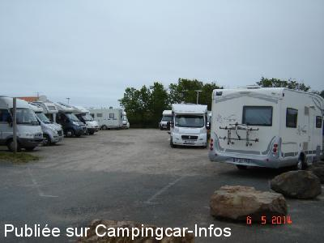
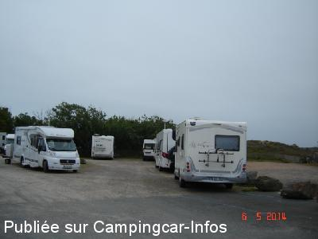
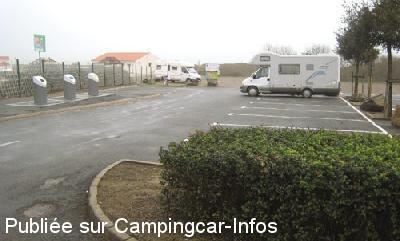

APCC = parkings réservés camping-cars sans services de :
LA TRANCHE SUR MER
(N° 219)
Accès/adresse :
Rue du Phare
85360 LA TRANCHE SUR MER
85360 LA TRANCHE SUR MER
Latitude : (Nord) 46.34371° Décimaux ou 46° 20′ 37′′
Longitude : (Ouest) -1.46224° Décimaux ou -1° 27′ 44′′
Tarif : 2015
Stationnement : 4,50 à 7,50 €
Taxe de séjour : 0,85 €
Passage de la police municipale pour encaisser
Services :
Commerces à proximité
Accès direct à la plage
Autres informations :
23 emplacements
Stationnement limité 48 h
Tél Office de Tourisme : +33(0)251 303 396
http://www.ot-latranchesurmer.fr/

Le 19/08/2014 par PC

Le 19/08/2014 par PC

Le 21/01/2007 par
de
claire70
le 19/08/2015 :
§Nous avons dormi 1 nuit sur ce parking. Très près de la mer mais sans aucun service. Nuit calme.
Au prix payé début août 7,50 € il faut ajouter depuis le 01 juillet 2015 0,85 cts € par personne de taxe de séjour.
2 agents sont passés le soir. Nous pouvons payer par chèque , espèce ou CB.
Une navette gratuite existe pour aller au centre ville départ en bord du parking.
§Nous avons dormi 1 nuit sur ce parking. Très près de la mer mais sans aucun service. Nuit calme.
Au prix payé début août 7,50 € il faut ajouter depuis le 01 juillet 2015 0,85 cts € par personne de taxe de séjour.
2 agents sont passés le soir. Nous pouvons payer par chèque , espèce ou CB.
Une navette gratuite existe pour aller au centre ville départ en bord du parking.
de
Henri
le 03/05/2015 :
Aire très calme, bord de mer...
2.5 kms du centre.
Possibilité de faire les services à l'aire de l'omnisport.
A conseiller
Aire très calme, bord de mer...
2.5 kms du centre.
Possibilité de faire les services à l'aire de l'omnisport.
A conseiller
de
shoggoun
le 16/04/2015 :
une nouvelle pancarte avec de nouveau tarif pour ce parking et pour celui vers le stade ou j'ai vidangé.
la police municipale passe pour faire payer le parking.
une nouvelle pancarte avec de nouveau tarif pour ce parking et pour celui vers le stade ou j'ai vidangé.
la police municipale passe pour faire payer le parking.
de
michel
le 26/09/2014 :
passé apres le 15 aout payer 10 euros pour etre sur un parking désolé nous sommes repartis.nous y retournerons pas.
passé apres le 15 aout payer 10 euros pour etre sur un parking désolé nous sommes repartis.nous y retournerons pas.
de
Mel
le 06/05/2014 :
Passés le 03/05/2014
Une aire super sympa au ras de la mer, juste à traverser la dune.
Quand nous sommes passés nous avons rien payé et rien est indiqué pour un paiement éventuel.
Le parking est indiqué pour les camping-car mais pas de vidange ni eau, il faut aller sur les autres aires plus dans le centre de la Tranche.
Il faut arriver de bonne heure, beaucoup de camping-car.
Avec l'eau et les vidanges ça serait le top mais c'est peut être voulu pour ne pas que les gens restent trop longtemps.
Passés le 03/05/2014
Une aire super sympa au ras de la mer, juste à traverser la dune.
Quand nous sommes passés nous avons rien payé et rien est indiqué pour un paiement éventuel.
Le parking est indiqué pour les camping-car mais pas de vidange ni eau, il faut aller sur les autres aires plus dans le centre de la Tranche.
Il faut arriver de bonne heure, beaucoup de camping-car.
Avec l'eau et les vidanges ça serait le top mais c'est peut être voulu pour ne pas que les gens restent trop longtemps.
de
Patrick
le 27/06/2013 :
§ Aire très propre au bord de mer, gratuit sauf Juillet & Aout.
Boulangerie à proximité, centre ville à 2Km accessible soit par plage ou par rues très sympa.
§ Aire très propre au bord de mer, gratuit sauf Juillet & Aout.
Boulangerie à proximité, centre ville à 2Km accessible soit par plage ou par rues très sympa.
de
TITITE35
le 28/04/2011 :
Le parking n'est payant que du 1 juillet au 31 aout de 18 heures à10 heures
Je confirme que la boulangére est sympa elle permet même que l'on se connecte gracieusement en WIFI depuis la terrase de son magasin un grand bravo pour ce geste
Le parking n'est payant que du 1 juillet au 31 aout de 18 heures à10 heures
Je confirme que la boulangére est sympa elle permet même que l'on se connecte gracieusement en WIFI depuis la terrase de son magasin un grand bravo pour ce geste
de
jean biot
le 17/07/2010 :
Bonjour à tous. Les 3 aires de la Tranche sur Mer ne sont plus gratuites à compter du 01/07/2010. Salut.
Bonjour à tous. Les 3 aires de la Tranche sur Mer ne sont plus gratuites à compter du 01/07/2010. Salut.
de
TITITE35
le 24/04/2010 :
Aire de stationnement gratuite, super sympa, nous y avons passé 2 nuits.
Aire de stationnement gratuite, super sympa, nous y avons passé 2 nuits.
de
Fredolabricole
le 02/06/2009 :
Nous y sommes passez pour le week-end de la Pentecote, le parking était plein, archi plein. On a passé la nuit sur un parking juste à côté. D'autres étaient garés le long de la route. A première vue pas de souci avec la maréchaussée, reste à voir en pleine saison.
A savoir que la Tranche sur Mer semble très accueillante avec les camping-cars contrairement à certains villages avoisinants. Je n'ai vu que quelques panneaux d'interdiction de stationnement aux CC dans dans certains points de la ville qui restaient complètement logiques.
Nous y sommes passez pour le week-end de la Pentecote, le parking était plein, archi plein. On a passé la nuit sur un parking juste à côté. D'autres étaient garés le long de la route. A première vue pas de souci avec la maréchaussée, reste à voir en pleine saison.
A savoir que la Tranche sur Mer semble très accueillante avec les camping-cars contrairement à certains villages avoisinants. Je n'ai vu que quelques panneaux d'interdiction de stationnement aux CC dans dans certains points de la ville qui restaient complètement logiques.
de
daniel et nadine 76
le 04/08/2008 :
Aire très bien et calme, à 1km de la ville, plage à deux pas et boulanger à la sortie du parking, ouvert de 7 h à 20h30.
Aire très bien et calme, à 1km de la ville, plage à deux pas et boulanger à la sortie du parking, ouvert de 7 h à 20h30.
de
verdurette
le 05/11/2007 :
Bonjour. Nous y sommes passés aux vacances de la Toussaint.. Un seul camping-car ! Tranquille ! A 3 secondes d'une plage magnifique. C'est certain, en été, vu la grandeur de l'aire, les places doivent être chères ! Vive le bord de mer en automne !
Bonjour. Nous y sommes passés aux vacances de la Toussaint.. Un seul camping-car ! Tranquille ! A 3 secondes d'une plage magnifique. C'est certain, en été, vu la grandeur de l'aire, les places doivent être chères ! Vive le bord de mer en automne !
de
cocojo
le 16/09/2007 :
Nous avons voulu stationner sur ce parking le week-end dernier, aucune place de libre. Dommage car endroit sympa à refaire
Nous avons voulu stationner sur ce parking le week-end dernier, aucune place de libre. Dommage car endroit sympa à refaire
de
yvon
le 11/10/2006 :
Juin : super , calme 9 CC = plein mais sur le parking devant pas de problème. Octobre : encore du monde mais devant = ok
Sinon le site est extra avec balade à la plage ou en ville et les pistes cyclables de Vendée sont nombreuses et variées. J'aime cette aire de stationnement. A découvrir
Juin : super , calme 9 CC = plein mais sur le parking devant pas de problème. Octobre : encore du monde mais devant = ok
Sinon le site est extra avec balade à la plage ou en ville et les pistes cyclables de Vendée sont nombreuses et variées. J'aime cette aire de stationnement. A découvrir